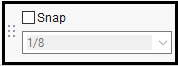
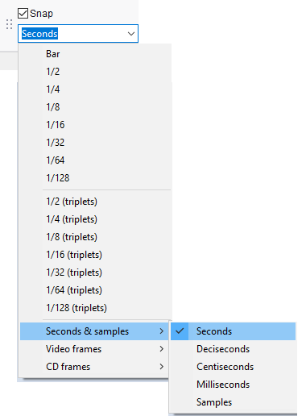

Snapping Toolbar
- Various types of video file frame can be snapped to, including NTSC and PAL.
- Snapping to video frames can be useful to maintain video and audio synchronization when editing audio from video files.
| Even if Snap is enabled, the command will still align to positions outside snap positions for the current format. |
- 
Settings
By default snapping is "off" and the format field is grayed out and inaccessible.
When you turn it "on" by clicking in the Snap checkbox you can then click on the down-chevron at the right of the format field to access the format menu enabling you to choose the snapping format you require.
- 
Snapping the cursor
With Snap set "on" (not default) and the format set seconds (default), clicking in-between 6 seconds and 7 seconds as displayed on the Timeline snaps the cursor to the nearest second unit 6 or 7, unless the cursor is already exactly at the nearest second unit relative to the click point.
Assuming the cursor is currently at other than exactly 6.0 whole seconds, clicking at 6.4 seconds will now snap the cursor to 6.0 seconds, while clicking at 6.8 seconds will snap the cursor to 7.0 seconds.
Snapping a selection
Dragging a selection always snaps both selection edges to the nearest whole second. For example, when dragging rightwards on the right edge of a selection from 6.3 seconds to 6.6 seconds, the left edge of the selection will jump back at once to 6.0 seconds and the right edge of the selection will jump forwards at once to 7.0 seconds.
If you continue to drag the mouse pointer, the right edge of the selection will not extend at once, but will snap to 8.0 seconds once the mouse pointer is dragged beyond 7.5 seconds. Similarly, if you then drag leftwards on the left edge of the selection it will extend to start from 5.0 seconds when the pointer is dragged before 5.5 seconds.
| Snapping a selection to whole seconds can be useful for exporting a selection that needs to be a whole number of seconds, without entering values in the Selection Toolbar boxes (which would be another way of ensuring accuracy). |
Snapping a moved clip
Dragging a clip will also snap to the chosen snap format.
- The left edge of the clip snaps if your hand-cursor for the click and drag to move the clip is in the the half of the clip-handle drag-bar.
- If the hand-cursor is in the right half of the drag-bar the right edge of the clip will snap.